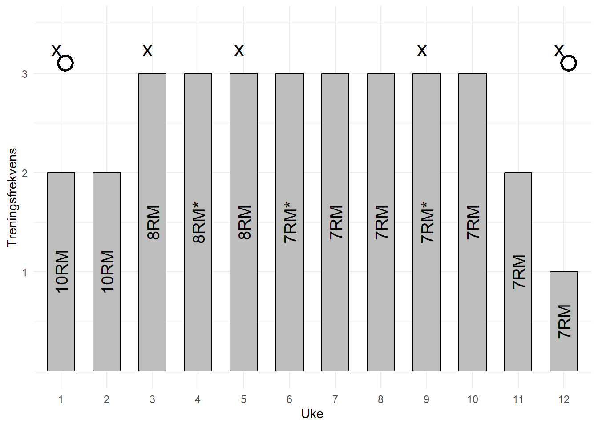
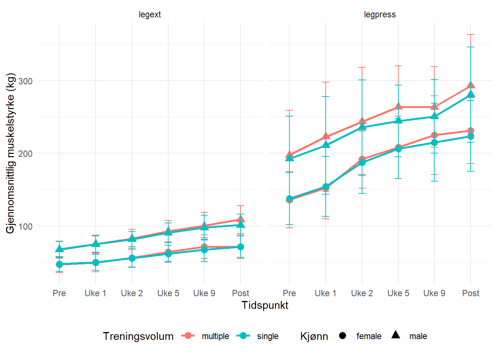

| Ekskludert | Inkludert | Ekskludert | Inkludert | |
|---|---|---|---|---|
| N | 4 | 18 | 3 | 16 |
| Alder | 22.9 (1.6) | 22.0 (1.3) | 24.3 (1.5) | 23.6 (4.1) |
| Vekt | 64.6 (9.7) | 64.4 (10.4) | 88.2 (22.4) | 75.8 (10.7) |
| Stature | 166 (8) | 168 (7) | 189 (5) | 183 (6) |
Assignment 5: Analyzing repeated measured experiments
1 Introduksjon
Avsnitt 1:
Treningsadaptasjon er en av de mest grunnleggende søylene i treningsvitenskapen, som sier at kroppen vår kan tilpasse seg den belastningen den utsettes for, gitt at den får nok tid til å tilpasse seg den nye belastningen (Bompa & Buzzichelli (2019), s. 8). Spesielt skjelettmuskulaturen har vist seg å være et høgts tilpasningsdyktig vev som kan endre sin egen arkitektur som respons på en gitt stimuli (Coffey & Hawley (2007)). Resultatene på disse tilpasningene er påvirket av volumet, intensiteten og frekvensen av treningen, i tillegg vil tilpasningene avhengig av den spesifikke belastningen kroppen og muskulaturen utsettes for, for eksempel treningsmetode (Bompa & Buzzichelli (2019), s.3; Raastad et al. (2010), s.17;Coffey & Hawley (2007);Izquierdo et al. (2004)).
Styrketrening har vist seg å være avgjørende, ikke bare for idrettsprestasjoner (Washif & Kok (2022)), men også for folkehelse og redusert dødelighet (Ruiz et al. (2008)). Denne treningsformen omfatter aktiviteter som utvikler eller opprettholder vår evne til å generer maksimal kraft eller dreiemoment ved en spesifikk hastighet (Raastad et al. (2010), s.17). Trening for maksimal muskelstyrke, der målet er å øke den høyeste kraften en muskel kan produsere (målt som en repetisjon maksimum) (Raastad et al. (2010), s.13), skiller seg fra trening med hensikt om muskelvekst (hypertrofi), hvor fokus ligger på å øke muskelens størrelse (Schoenfeld et al. (2016)). Flere studier har undersøkt hvilket treningsvolum som best stimulerer slike tilpasninger og har identifisert et dose-respons-forhold, hvor økt treningsvolum er assosiert med større muskelvekst (Currier et al. (2023); Schoenfeld et al. (2016)). Et lignende forhold er også blitt observert for muskelstyrke (Ralston et al. (2017)), selv om det er også foreslått at et høgt treningsvolum kan bremse utviklingen av maksimal muskelstyrke (Zhang et al. (2023)). Muskelens tverrsnitt er en sentral faktor å ta med, da et større tverrsnitt vil gi et større potensiale for kraftutvikling (Raastad et al. (2010), s.20). Dette understreker behovet for videre undersøkelser av hvordan treningsvolum påvirker både muskelhypertrofi og styrkeutvikling, samt i hvilken grad endringer i muskelmasse er sammenfallende med økninger i styrke.
På bakgrunn av tidligere forskning og den noe usikre dose-respons-sammenhengen mellom optimal treningsvolum og muskeltilpasninger, er formålet med denne studien å undersøke hvordan ulike nivåer av treningsvolum påvirker både muskelvekst og muskelstyrke. Ettersom at skjelettmuskulaturen er svært tilpasningsdyktig på den stimulien den utsettes for, ønsker studien også å undersøke om større endringer i muskelvekst følger sammen med tilsvarende endringer i muskelstyrke ved høyere treningsvolum. Ved å utforske denne sammenhengen håper man å kunne bidra med økt innsikt som kan være nyttig ved anbefalinger om optimalt treningsvolum.
- Introdusere leseren for kva som skal bli undersøkt. Sentrale punkter å få med er:
- Hensikten med trening generelt, og knytt det opp mot styrketrening - kva er dette? For inspirasjon se eksamensoppgåve i styrkefaget.
- Forholdet mellom økt lean body mass og styrketrening (dose-respons forholdet)- tett knyttet til hverandre, samtidig som det ses en diskrepans når man sammenligner dose-respons forholdet på lean body mass og muskelstyrke.
Avsnitt 2:
- Benytt dette avsnittet til å forklare mer i detalj mekanismene bak økning i lean body mass og muskelstyrke. Sentrale definisjoner å få inn vil være
- Lean body mass
- Muskelstyrke, maksimal styrke
- Hva er det som er med å bestemme muskelstyrken vår (se Raastad for inspirasjon)
- Dose-respons forholdet
- Treningsvolum
- Kan være fint å få inn intensitet og grad av anstrengelse
Avsnitt 3:
- Mange som argumenterer for at tverrsnitsarealet av muskulatur er den viktigaste faktoren for vår maksimale styrke. Utfordrer derfor dette synet, og ønsker å se på om økning i muskelmasse kan være et godt mål på økning i muskelstyrke.
2 Metode
2.1 Deltagere og studieoversikt
Totalt ble førti-en menn og kvinner inkludert i studien, der inklusjonskriterene var at de ikke var røykere og var mellom 18 og 40 år. Klare eksklusjonskriterer som redusert muskelstyrke grunnet tidligere eller nåværende skader, har hatt mer en en ukentlig styrketrenings økt de siste 12 månedene fra inklusjonsdato, intoleranse for lokal bedøvelse, samt bruk av medikamenter som kan påvirke treningsadaptasjoner. Syv deltakere ble ekskludert fra data analysen, fordi de ikke hadde gjennomført minimum 85% av de oppsatte treningene grunnet årsaker som: ubehag eller smerter i underekstremitetene under trening (n = 5), skade påført utenom studieprotokollen (n = 1), eller manglende overholdelse av studiedesignet (n = 1). Det var ingen forskjeller i antropometriske data og maksimal frivillig kontraksjon (MFK) normalisert for kroppsvekt, mellom de inkluderte og ekskluderte deltagerne ved baseline, se Table 1. Selv om ingen av de inkluderte deltakerne utførte mer en 1 ukentlig styrkeøkt, var det tjue deltakere som rapporterte at de var fysisk aktive ved inklusjon (median på 2 økter i uken, med en range på 0.5-4). Alle de inkluderte hadde tidligere treningserfaringer med ulike idretter, som for eksempel lagidretter, skiskytting etc…). Eg er usikker på om eg kan ha med denne dataen, siden den ikkje kan vises til i datasettet.
Verdiene er presentert som gjennomsnitt og standardavvik (SD).
Deltakerne gjennomgikk en treningsintervensjon med 12 uker styrketrening for hele kroppen i perioden september til november. For å muliggjøre for differensiereng av treningsvolum for hver deltaker, ble beinøvelsene utført unilateralt. Hver deltaker fikk tilfeldig utdelt enten ett sett eller tre sett til enten høgre eller venstre bein. Deltagerne utførte dermed begge volumprotokollene. Det ble gjennomført måling av maksimal styrke ved baseline, under (uke 3,5 og 9) og rett etter intervensjonen, mens muskeltverrsnitt ble målt før og etter, se Figure 1.

De ulike søylene illustrer treningsfrekvens per uke med en treningsintensitet lik x repetisjon maksimum (RM). De intensitetne som er markert med (*), referer til at en av de øktene den uken ble utført med 90% av 1RM. Sirkelsymbolet viser til når det ble utført målinger av muskeltversnitt med hjelp av fullkropps DXA og MR av kneekstensjons muskelen. X markerer de ulike styrkemålingene: før intervensjonen (n = 34), under (n = 18) og etter (n = 34). Den maksimale styrken før intervensjonen ble satt som den høgeste verdien deltagerne oppnådde under to ulike testsekvenser før intervensjonen startet.
2.2 Styrketreningsprotokoll
Det ble laget en standardisert oppvarming som deltakerne skulle gjennomføre før de begynte med styrketreningen. Oppvarmingen begynte med 5 minutter på ergometer sykkel, der de skulle holde 12-14 på gjennomgått grad av anstrengelse (RPE, se bilde under). Etter syklingen skulle de gjennomføre 10 repetisjoner av push-ups (tilpasset vanskelighetsgrad basert på vinkel), sit-ups, knebøy og rygghev, etterfulgt av et sett med 10 repetisjoner av hver styrkeøvelse med en motstand tilsvarende rundt 50% av deres repetisjons maksimum (1RM).
Styrketreningen inneholdt en del for beina og en for overkroppen. For beina skulle det gjennomføres unilateral beinpress, knefleksjon og knestrekk, i den nevnte rekkefølgen. Avhengig av gruppen deltakerne ble tildelt til, ble hver øvelse enten utført med ett sett eller tre sett. Beinet som ble tildelt ett-setts protokollen gjennomførte arbeidet sitt mellom det andre og tredje settet til benet som skulle gjennomføre tre sett. Pausene mellom settene skulle vare mellom 90-180 sekunder. Etter beinøvelsene hadde blitt fullført, skulle deltakerne gjøre to sett av bilateral benkpress, nedtrekk og enten skulderpress eller sittende roinger som ble gjort i hver sin økt. Som man kan se fra Figure 1, så ble treningsintensiteten gradvis økt fra 10RM to første ukene hadde 10RM, til 8RM de påfølgende tre ukene og 7RM de siste syv ukene. Etter den niende treningsøkten hadde hver uke som inneholdt tre økter i uken, en økt med lavere motstand, men der man beholdt samme antall repetisjoner (motstanden tilsvarte 90% av økten før). Øktene med maksimal innsats skulle ikke gjentas før det var gått 48 timer, mens det trengte kun å gå 24 timer mellom ny økt og øktene med redusert motstand. For å fasiletere til restitusjon, ble det gitt en standardisert drikk med 0.15 g kg\(^{-1}\) protein, 11.2g kg\(^{-1}\) karbohydrater og 0.5 g kg\(^{-1}\) fett, etter hver treningsøkt. For å sikre bærekraftighet av treningsprotokollen, ble det lagt opp til at noen av øktene kunne gjennomføres uten tilsyn. For å sikre progresjon og etterlevelse, ble deltakerne instruert til å føre deltaljerte loggbøker for de øktene som ble utført uten tilsyn, slik at forskerteamet kunne i samarbeid med deltakerne gå gjennom øktene. Av alle øktene, ble i gjennomsnitt 91% (SD = 10%, range 67-100%) av øktene gjennomført med tilsyn.
2.3 Målinger av maksimal muskelstyrke og muskelens tverrsnittsareal
Deltakerne sin maksimale styrke ble satt som deres en repetisjon maksimum (1RM) i unilateral beinpress og knestrekk. Selve testen inneholdt en standardisert oppvarming med 10, 6 og 3 repetisjoner på henholdsvis 50,75 og 85% av deres antatte repetisjon maksimum. Etter dette, ble motstanden gradvis økt helt til deltagerne ikke mestret å løfte vekten gjennom hele bevegelsesbanen, for å finne deres 1RM. Hver deltaker fikk mellom fire og seks forsøk, der den høgeste vekten de mestret å løfte i hver øvelse, ble satt som 1RM. Ved baseline, ble 1RM målt to ganger med minst fire dager mellom hver måling, der den høyeste i hver test ble brukt i videre analyser. I tillegg til nye målinger etter endt intervensjon, gjennomførte en del av deltakerne (n = 18) styrkemålinger underveis i studien (i uke 2, 5 og 9). Det skulle ha gått minst 48 timer fra forrige treningsøkt før styrketest. De resterende som ikke utførte tester underveis, ble de ordinære treningsøktene prioritert ved sykdom eller tidsutfordringer som medførte at de gikk glipp av trening eller test.
Ved hjelp av magnetisk resonans bildefremstilling (MR), målte man deltagernes quadricep (vastus lateralis, medialis, intermedius og rectus femoris) muskeltverrsnittsareal. Dette ble gjort i henhold til produsentens protokoll (S-Scan, Esaote Europe B.V., Maastricht, Nederland), og personen som skulle analysere MR-bildene var blindet ved hjelp av OsiriX (v.5.6, Pixmeo Sarl, Bernex, Sveits). Målingen av muskeltverrsnittet både før og etter intervensjon, ble gjort på samme sted på låret, cirka midt på, med samme avstand fra kneleddet. Resultatet av målingen måtte inneholde minst fire påfølgende bilder med 5 mm tykkelse og 10mm avstand.
2.4 Data analyse og statistikk
- Data analysis and statistics: Describe how you treated the data prior to statistical tests or procedures and what tests/procedures were used to draw inference (or more generally, to answer your purpose). Describe how you present data (e.g. descriptive data with mean (SD), inference with confidence intervals etc.).
Med mindre noe annet er spesifisert, er alle deskriptive data presentert som gjennomsnitt og standardavvik. Før studien ble det gjort en forhåndsberegning av utvalgsstørrelse, som viste at 40 deltakere ville være tilstrekkelig for å kunne oppdage forskjeller på omtrent 3 og 5 prosentpoeng for henholdsvis muskeltverrsnittsareal og maksimal styrke mellom de ulike volumforholdene, med en ønsket statistisk styrke på 80%. Denne beregningen er basert på data fra tidligere studier, som antar at forskjellene mellom volumforholdene tilsvarer en effektstørrelse på mellom 0,19 og 0,24 (Ralston et al. (2017); Schoenfeld et al. (2016)).
For å undersøke hvordan de ulike volumforholdene påvirket muskelvekst og styrke, ble det benyttet lineære blandede modeller (LLM). De relative endringene fra baseline ble satt som den avhengige variabelen, med antall sett som den uavhengige variabelen. For å vurdere om større muskelvekst også gir tilsvarende endringer i muskelstyrke, ble en interaksjonseffekt mellom treningsvolum og endring i muskeltverrsnitt inkludert. Ved å inkludere denne interaksjonseffekten kan modellen fange opp eventuelle forskjeller i effekten av muskelvekst på muskelstyrke under ulike treningsvolum. Baseline-verdier og kjønn ble brukt som kovariater for å kontrollere for deres potensielle effekt på muskelvekst og styrke.
Resultater med et signifikansnivå på \(\alpha = 0.05\) ble ansett som statistisk signifikante. Analysen av dataene ble gjort i R (R Core Team (2018)).
3 Resulater

| Tidspunkt | Treningsvolum | Gjennomsnittlig muskeltverrsnitt (g) | Standardavvik (SD) |
|---|---|---|---|
| post | multiple | 9093.368 | 1297.290 |
| post | single | 8983.975 | 1219.944 |
| pre | multiple | 8835.974 | 1189.980 |
| pre | single | 8845.317 | 1175.207 |
4 Diskusjon
Bompa, T. O., & Buzzichelli, C. (2019). Periodization: Theory and methodology of training (6th ed.). Human Kinetics.
Coffey, V. G., & Hawley, J. A. (2007). The molecular bases of training adaptation. Sports Medicine, 37(9), 737–763. https://doi.org/10.2165/00007256-200737090-00001
Currier, B. S., Mcleod, J. C., Banfield, L., Beyene, J., Welton, N. J., D’Souza, A. C., Keogh, J. A. J., Lin, L., Coletta, G., Yang, A., Colenso-Semple, L., Lau, K. J., Verboom, A., & Phillips, S. M. (2023). Resistance training prescription for muscle strength and hypertrophy in healthy adults: A systematic review and bayesian network meta-analysis. British Journal of Sports Medicine, 57(18), 1211–1220. https://doi.org/10.1136/bjsports-2023-106807
Izquierdo, M., Ibáñez, J., Häkkinen, K., Kraemer, W. J., Ruesta, M., & Gorostiaga, E. M. (2004). Maximal strength and power, muscle mass, endurance and serum hormones in weightlifters and road cyclists. Journal of Sports Sciences, 22(5), 465–478. https://doi.org/10.1080/02640410410001675342
R Core Team. (2018). R: A language and environment for statistical computing. R Foundation for Statistical Computing. https://www.R-project.org/
Raastad, T., Paulsen, G., Refsnes, P. E., Rønnestad, B. R., & Wisnes, A. R. (2010). Styrketrening - i teori og praksis (2nd ed.). Gyldendal Norsk Forlag.
Ralston, G. W., Kilgore, L., Wyatt, F. B., & Baker, J. S. (2017). The effect of weekly set volume on strength gain: A meta-analysis. Sports Medicine, 47, 2585–2601. https://doi.org/10.1007/s40279-017-0762-7
Ruiz, J. R., Sui, X., Lobelo, F., Morrow, J. R., Jackson, A. W., Sjöström, M., & Blair, S. N. (2008). Association between muscular strength and mortality in men: Prospective cohort study. BMJ: British Medical Journal, 337(7661), 92–95. http://www.jstor.org/stable/20510282
Schoenfeld, B. J., Ogborn, D., & Krieger, J. W. (2016). Dose-response relationship between weekly resistance training volume and increases in muscle mass: A systematic review and meta-analysis. Journal of Sports Sciences, 35(11), 1073–1082. https://doi.org/10.1080/02640414.2016.1210197
Washif, J. A., & Kok, L. Y. (2022). Relationships between vertical jump metrics and sprint performance, and qualities that distinguish between faster and slower sprinters. Journal of Science in Sport and Exercise, 4, 135–144. https://doi.org/10.1007/s42978-021-00122-4
Zhang, X., Feng, S., & Li, H. (2023). The effect of velocity loss on strength development and related training efficiency: A dose–response meta–analysis. Healthcare, 11(3). https://doi.org/10.3390/healthcare11030337